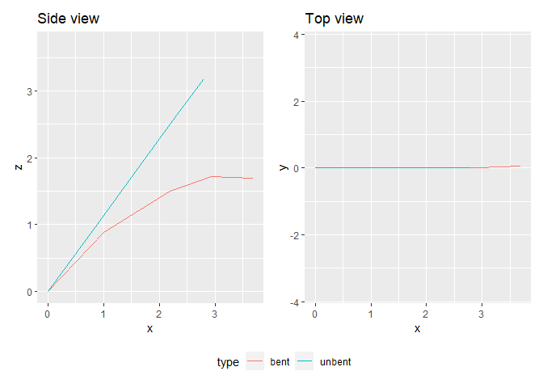

biomech helps to compute bending and torsion of beams following the Euler-Bernoulli beam theory. It is specifically designed to be applied on tree branches (or e.g. palm leaves), but can be applyied to any other beam-shaped structure.
Installation
You can install biomech from GitHub with:
# install.packages("devtools") devtools::install_github("PalmStudio/biomech")
Example
Here is an example usage:
library(biomech) filepath = system.file("extdata/6_EW01.22_17_kanan.txt", package = "biomech") # Un-bending the field measurements: df = unbend(2000,400, read_mat(filepath)) # (Re-)computing the deformation: df_bend = bend(df, step = 0.02, points = 100, iterations = 15, verbose = TRUE) #> Final torsion angle at the tip (degree) = 12.52822 df_bend #> x y z length angle_xy angle_xz torsion #> 1 0.000000 0.000000e+00 0.0000000 0.0000000 0.000000 0.000000000 4.000000 #> 2 1.005821 2.560607e-05 0.8804207 1.3367185 41.196484 0.001458629 4.032577 #> 3 2.189133 1.221958e-03 1.5040225 1.3375757 27.789072 0.057927116 4.680782 #> 4 2.938415 1.010048e-02 1.7168802 0.7789798 15.857866 0.678887946 7.234918 #> 5 3.694703 5.296550e-02 1.6982406 0.7577320 -1.409568 3.243945798 12.528219
You can plot the results using:
plot_bending(bent = df_bend, unbent = df)

Note that the unbent argument is optional but can be very usefull to compare with the initial conditions.
You can even make 3d plots using plot_bent_3d():
plot_bending_3d(df_bend,df)